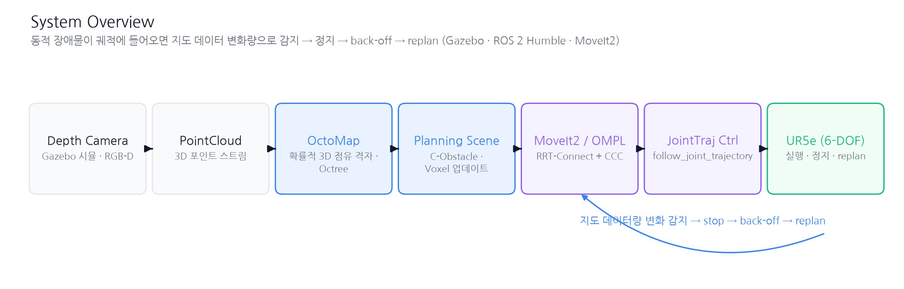
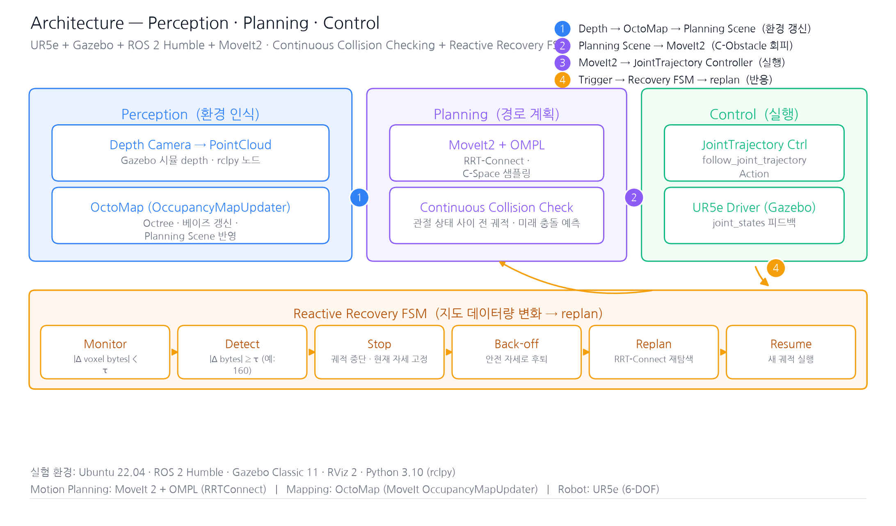
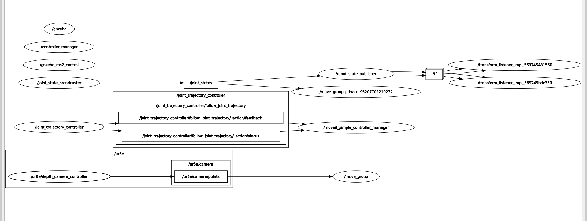
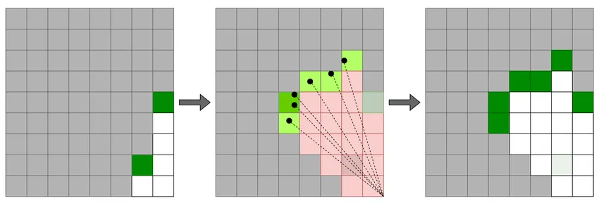
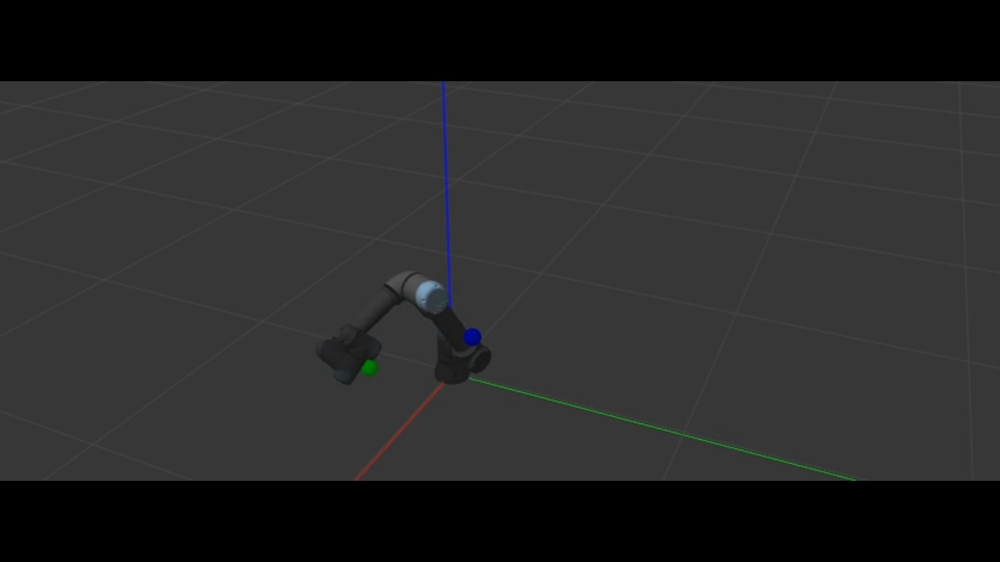
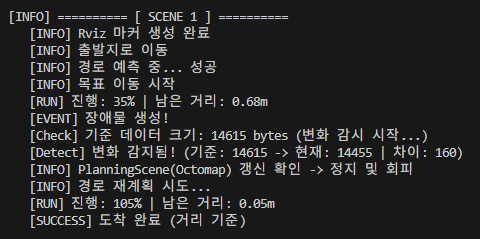
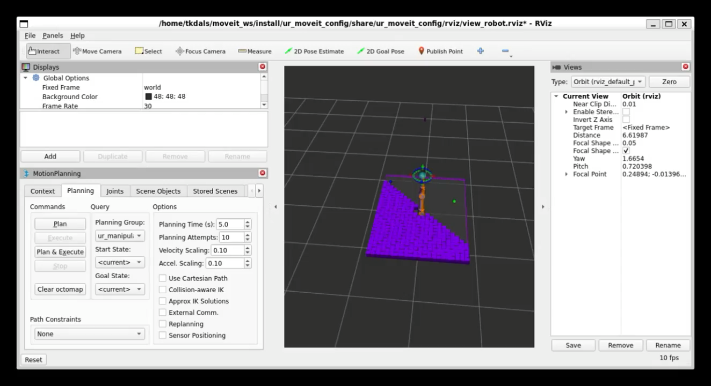

깊이 카메라 관측을 점유 지도로 변환해 경로 계획에 반영하고, 지도 변화 이벤트에 따라 정지·후퇴·재계획·재개를 수행하는 흐름입니다.

01 · Problem Definition
정적 플래너만으로는 실행 중인 궤적에 갑자기 진입하는 동적 장애물에 대응하기 어렵습니다. 실제 UR5e 하드웨어에 적용하기 전에 Gazebo 시뮬레이션에서 장애물 감지부터 재계획까지 이어지는 반응형 파이프라인을 먼저 검증할 필요가 있었습니다.
팀 프로젝트의 개발 범위를 고려해 별도의 장애물 인식 모델을 학습하기보다, 지도 갱신 정보를 이용해 장애물 감지 → 정지 → 후퇴 → 재계획 → 재개가 연결되도록 시스템을 단순화했습니다.
02 · Scope & Design Goals
- 깊이 카메라 관측을 OctoMap으로 변환해 MoveIt2 Planning Scene에 반영함.
- OMPL RRT-Connect와 연속 충돌 검사를 연결해 관절 공간 경로를 생성함.
- 지도 변경 이벤트가 발생하면 정지·후퇴·재계획·재개로 이어지는 Recovery FSM을 구성함.
- Gazebo에서 Perception부터 Control까지 이어지는 반응형 재계획 흐름을 검증함.
03 · Design & Implementation
Perception, Planning, Control과 Recovery FSM의 연결 구조입니다. 센서 정보가 Planning Scene에 반영되고 지도 변화 이벤트가 로봇 정지와 재계획을 트리거합니다.

ROS 2 노드와 토픽의 연결 관계입니다. Gazebo, MoveIt2, OctoMap, trajectory controller와 재계획 노드 사이의 데이터 흐름을 확인할 수 있습니다.

점유 지도 기반 장애물 표현
이 과제의 핵심은 장애물의 종류를 분류하는 것이 아니라 로봇의 계획 궤적과 점유 공간이 충돌하는지 판단하는 것이었습니다. 따라서 별도의 객체 검출 모델을 학습하기보다 깊이 카메라 점군을 OctoMap으로 변환해 free·occupied·unknown 공간을 표현했습니다. 학습 데이터와 클래스 정의 없이 Planning Scene을 갱신할 수 있지만, 장애물의 의미나 개별 객체를 추적하지는 않습니다.
Gazebo 깊이 카메라에서 생성한 점군을 MoveIt OccupancyMapUpdater로 전달해 OctoMap으로 통합했습니다. 관측 광선이 통과한 공간은 free, 종단점은 occupied로 갱신하고 관측되지 않은 영역은 unknown으로 유지해 3차원 점유 지도를 구성했습니다. 갱신된 지도는 MoveIt2 Planning Scene에 반영되어 경로 계획과 충돌 검사에 사용됩니다.
OctoMap의 점유 지도 갱신 원리입니다. 광선이 통과한 셀은 free, 광선의 끝점은 occupied로 갱신하며 미관측 영역은 unknown으로 유지합니다.

MoveIt2·OMPL 기반 관절 공간 계획
UR5e는 6개 관절의 상태가 함께 움직이므로 목표 위치만 고려한 직선 이동보다 관절 제약과 충돌 장면을 반영하는 계획기가 필요했습니다. MoveIt2의 Planning Scene에 OctoMap을 연결하고 OMPL의 RRT-Connect를 사용해 시작·목표 관절 상태 사이의 경로를 탐색했습니다. waypoint만 확인하면 샘플 사이의 충돌을 놓칠 수 있어 연속 충돌 검사도 함께 적용했습니다.
Gazebo에서 구성한 UR5e 실험 장면입니다. 목표 위치와 정적 장애물, 이동 중 진입하는 동적 장애물을 배치했습니다.

지도 변화량 기반 이벤트 감지와 Recovery FSM
실시간 이벤트 감지를 위해 OctoMap/Planning Scene 데이터량의 bytes-diff를 사용했습니다. 약 160 bytes 임계값은 지도 갱신이 발생했음을 감지하기 위한 실험적 휴리스틱이며, 장애물의 종류·위치·위험도를 직접 측정하지 않습니다. 복셀 갱신량은 센서 노이즈나 관측 범위에도 영향을 받으므로 일반적인 동적 장애물 인식 성능으로 해석할 수 없습니다.
재계획 감시 노드가 임계값 초과를 감지하면 Monitor → Detect → Stop → Back-off → Replan → Resume 순서로 상태를 전이하도록 구성했습니다. UR5e의 정지·후퇴·재개 명령은 JointTrajectory Controller를 통해 전달했습니다.
지도 데이터량 변화가 임계값에 도달한 뒤 장애물 감지, 정지, 재계획 요청과 새 경로 실행이 이어진 로그입니다.

04 · Experiments & Results
Gazebo의 UR5e 시뮬레이션에서 Perception–Planning–Control–Recovery FSM이 연결된 반응형 재계획을 end-to-end로 동작시켰습니다. 지도 데이터량 변화(bytes-diff, τ ≈ 160)를 기준으로 동적 장애물 진입을 감지하고, 별도 인식기 없이 정지 → 후퇴 → 재계획 → 재개가 이어지는 것을 로그와 RViz에서 확인했습니다 (예: 14615 → 14455 (Δ160) 감지 → replan SUCCESS).
5회 반복 실험에서는 3회 성공(3/5, 60%)으로 기록되었으며, 팀 자체 평가 자율 동작 완성도는 약 86%였습니다.
RViz에서 Planning Scene에 반영된 OctoMap 복셀을 확인한 화면입니다. 깊이 센서가 관측한 공간 정보가 충돌 검사와 경로 계획에 사용됩니다.

동적 장애물이 경로에 진입한 뒤 로봇이 정지하고 후퇴한 다음, 새 경로를 계산해 이동을 재개하는 전체 시연입니다.
- 실행 환경 — Ubuntu 22.04 · ROS 2 Humble · Gazebo Classic 11 · RViz 2 · Python 3.10 (rclpy)
- Motion Planning — MoveIt 2 + OMPL (RRT-Connect), Continuous Collision Check
- Perception — OctoMap (MoveIt OccupancyMapUpdater), Planning Scene 실시간 반영
- Robot — UR5e (6-DOF, Gazebo Sim), JointTrajectory Controller
- Team — 양태훈 (데이터사이언스) · 오상민 (AI) · 조윤재 (AI) — 인공지능종합설계 팀프로젝트
05 · Technical Issues & Improvements
현재 이벤트 감지는 OctoMap 데이터의 bytes-diff가 임계값을 넘었는지 확인하는 방식입니다. 지도에 변화가 생겼다는 사실은 감지할 수 있지만, 변경된 복셀이 로봇의 현재 궤적과 겹치는지 또는 실제 충돌 위험을 만드는지는 구분하지 못합니다. 따라서 센서 노이즈나 로봇과 멀리 떨어진 영역의 갱신도 재계획 이벤트로 이어질 수 있습니다.
다음 단계에서는 변경된 복셀의 위치를 현재 계획 궤적과 비교해, 충돌 가능성이 있는 구간에서만 정지와 재계획을 실행하도록 개선할 예정입니다. 또한 장애물 위치·속도와 로봇의 정지 거리를 반영하고, 임계값별 오탐·미탐 및 재계획 지연을 측정할 계획입니다. 현재 검증은 Gazebo의 UR5e 시뮬레이션에 한정되어 있으므로 실제 UR5e와 깊이 센서에서 정지 거리와 재계획 성공 여부를 별도로 확인해야 합니다.
정적 경로의 안전성뿐 아니라 정책이 생성하는 행동 자체에 제약을 반영하는 방법도 후속 연구로 살펴보고 있습니다. CS-Pi: Constraint-Satisfying Flow Policy Sampling의 Draw–Project–Renoise 절차를 검토하고 있으며, 동적 장애물 회피와 작업 수행 가능성을 함께 고려하는 정책 기반 안전 행동 생성으로 확장할 예정입니다.